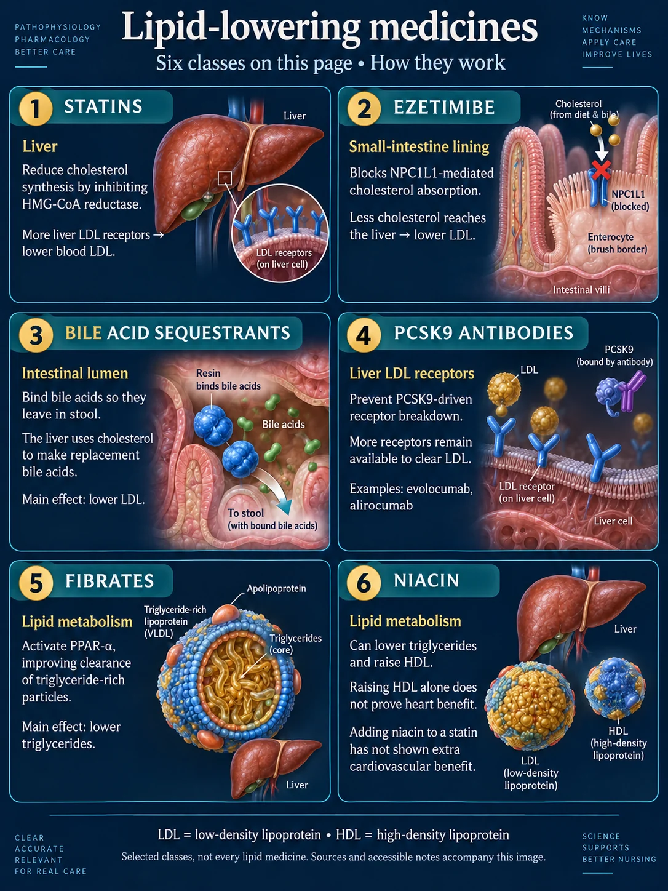
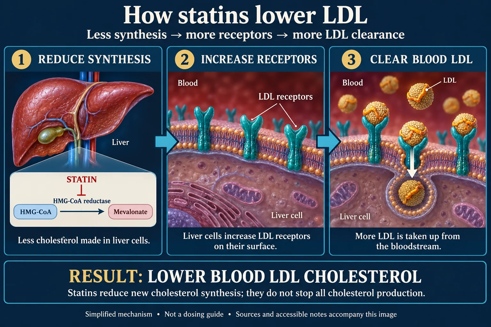
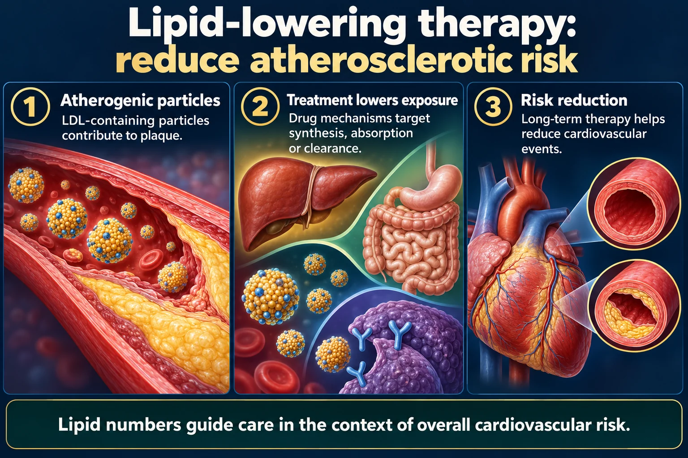

Statins · Ezetimibe · Sequestrants · Fibrates · Niacin · PCSK9
Indication: high cholesterol — hypercholesterolemia · hyperlipidemia · dyslipidemia (different names for the same thing). Every drug on this page is aiming at one target: the plaque from NG-145. Lower the LDL, calm the artery wall, and thicken the fibrous cap so it doesn't rupture. Statins are the backbone.
📄 Simple Nursing original — opens in Drive →
Each class hits cholesterol at a different address: the liver factory, the gut doorway, the bloodstream, or the liver's recycling receptors.

atorvastatin · simvastatin · lovastatin · rosuvastatin · pravastatin
MOA: it reduces new cholesterol production in the liver — technically by blocking the enzyme the liver needs to make cholesterol: HMG-CoA reductase. Less cholesterol made inside → the liver puts out more LDL receptors → it pulls LDL out of the blood.

| 💊 “-statin” (lovastatin, simvastatin…) | 🍄 NYSTATIN |
|---|---|
| Cholesterol-lowering — blocks HMG-CoA reductase in the liver | ANTIFUNGAL — treats yeast infections (oral thrush, candidiasis, diaper rash) |
| Oral tablet, usually once daily | Often a swish-and-swallow or swish-and-spit suspension, or a topical powder/cream |
| Watch: muscle pain, liver enzymes | Watch: it must contact the fungus — hold it in the mouth, don't eat/drink right after |
EXAM TIP NYstatin = NO cholesterol. It's for YEAST.
MOA: blocks cholesterol absorption at the small-intestine brush border — dietary and biliary cholesterol never gets in.
Use: usually added on to a statin when LDL isn't at goal, or used alone if she can't tolerate statins. Modest LDL lowering on its own.
Watch: generally well tolerated — GI upset/diarrhea; rare myalgia (more likely when combined with a statin); can raise liver enzymes when combined.
MOA: bind bile acids in the gut so they're excreted in stool. The liver must then use up cholesterol to make new bile → blood LDL falls. Same trick as the soluble fiber in oatmeal.
Big advantage: not absorbed systemically — it works entirely inside the gut.
Watch: CONSTIPATION (the classic), bloating, gas. May RAISE triglycerides — a poor choice if TGs are already high.
HUGE NURSING POINT It binds other drugs and the fat-soluble vitamins A, D, E, K. Give other medications 1 hour BEFORE or 4 hours AFTER the sequestrant — think digoxin, warfarin, levothyroxine, thiazides.
MOA: speed the breakdown and clearance of triglyceride-rich particles (they activate the pathway that boosts lipoprotein lipase).
Best at: lowering TRIGLYCERIDES — the go-to for very high TGs, including preventing pancreatitis. Modest HDL rise, little LDL effect.
Watch: GALLSTONES (cholelithiasis), GI upset, ↑ liver enzymes, and myopathy — the risk climbs sharply when combined with a statin (gemfibrozil is the worst offender). Use with caution in kidney disease.
MOA: reduces the liver's release of VLDL → ↓LDL and ↓triglycerides, and it raises HDL more than any other agent.
Watch — the one everybody tests: FLUSHING — hot, red, itchy face and neck. It's prostaglandin-mediated and harmless but miserable.
MOA: monoclonal antibodies that block PCSK9, the protein that destroys LDL receptors. Block it → the liver keeps far more LDL receptors → it vacuums LDL out of the blood. Very large LDL reductions.
Use: familial hypercholesterolemia, or established atherosclerotic disease when a maximally tolerated statin (± ezetimibe) isn't enough, or true statin intolerance.
Route: SUBCUTANEOUS injection every 2–4 weeks — not a pill. Teach self-injection, site rotation, refrigerate and let the pen reach room temperature before injecting.
Watch: injection-site reactions, flu-like symptoms, nasopharyngitis. Cost/prior authorization is a real-world barrier — ask about it.
Also on the shelf: prescription omega-3 fatty acids (for very high triglycerides) and bempedoic acid (an oral non-statin LDL-lowering option). Know they exist; the six above are the exam set.
| Class | LDL | Triglycerides | HDL | Signature adverse effect |
|---|---|---|---|---|
| Statins | ⬇️⬇️⬇️ biggest | ⬇️ | ⬆️ slight | Myopathy / rhabdo, ↑ liver enzymes |
| Ezetimibe | ⬇️ modest | ↔️ / slight ⬇️ | ↔️ | Well tolerated; GI upset |
| Bile acid sequestrants | ⬇️⬇️ | ⬆️ can raise | ↔️ / slight ⬆️ | Constipation + binds other drugs |
| Fibrates | ↔️ / slight ⬇️ | ⬇️⬇️⬇️ biggest | ⬆️ | Gallstones, myopathy with statins |
| Niacin | ⬇️ | ⬇️⬇️ | ⬆️⬆️ biggest | FLUSHING, ↑ glucose, ↑ uric acid |
| PCSK9 inhibitors | ⬇️⬇️⬇️ huge | ↔️ | slight ⬆️ | Injection-site reaction, SubQ route |
Four numbers. Three you want low, one you want high. These are standard adult reference targets.

Lipid numbers guide care in the context of overall cardiovascular risk.
Atherogenic particles
LDL-containing particles contribute to plaque.
Treatment lowers exposure
Drug mechanisms target synthesis, absorption or clearance.
Risk reduction
Long-term therapy helps reduce cardiovascular events.
Statins
Reduce hepatic cholesterol synthesis and increase LDL clearance.
Monitor
Adherence, response, interactions and unexplained muscle symptoms.
Whole plan
Nutrition, activity, smoking cessation and other risk treatment remain important.
EXAM TIP Clients with known heart disease or diabetes are usually pushed to a lower LDL than 100 — the <100 figure is the general adult target, not a ceiling for high-risk clients. Practice varies; follow the provider's stated goal.
ATI, HESI and Kaplan all ask the exact same question about statins — and the answer is always the muscles.
Answer first: new muscle aches, cramps, spasms, tenderness or weakness that she cannot explain by exercise or injury → notify the HCP. This is the single most tested statin fact.
Serious statin liver injury is uncommon, but the teaching point is constant: symptoms get reported, not waited out.
Answer first: No grapefruit or grapefruit juice with simvastatin, lovastatin or atorvastatin.
| Caution | What to do about it |
|---|---|
| Pregnancy & breastfeeding | Standard nursing teaching is to avoid statins in pregnancy and to use reliable contraception; a client planning pregnancy should talk to her provider before stopping or continuing. Cholesterol is needed for fetal development. |
| New-onset diabetes / ↑ A1c | A small, real effect. It does not outweigh the cardiovascular benefit — monitor glucose, don't stop the statin on your own. |
| Alcohol & liver disease | Limit alcohol; caution in active hepatic disease. |
| Kidney disease | Raises myopathy risk; some statins need dose adjustment — a pharmacy check, not a nursing guess. |
| “I feel fine, can I stop?” | No — high cholesterol has no symptoms. Stopping lets LDL rebound and destabilizes the plaque cap. This is a lifelong therapy conversation. |
| Combination with fibrates | Real but manageable risk — the client needs explicit muscle-symptom teaching and follow-up. |
Timing, expectations, and the three exam questions that are really the same question.
SOURCE CHECK “Always take a statin at night” is a useful default and it's what most nursing sources teach — but it's strictly true only for the short-acting statins. Know both halves.
| Source | Question | Answer |
|---|---|---|
| ATI | “Patient on lovastatin — when would the nurse notify the HCP?” | Muscle aches & cramps |
| HESI | “Which teaching is essential?” | “Report muscle pain & tenderness without injury” |
| Kaplan | “Which statement shows understanding?” | “Report NEW muscle tenderness to the HCP” |
NCLEX wording to recognize: “muscle cramps” · “muscle spasms” · “muscle aches” · “muscle tenderness” · “weakness” · “dark urine.” Any of them = report.
These newly drawn concept diagrams consolidate the retired illustration sets. The accompanying study notes and original handout links remain on this page.